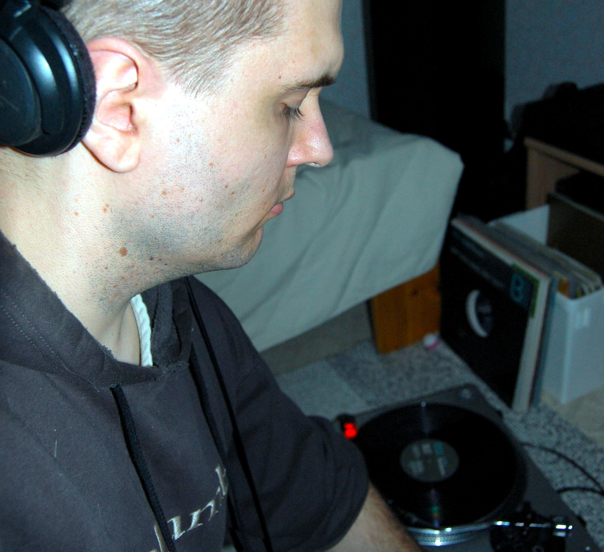
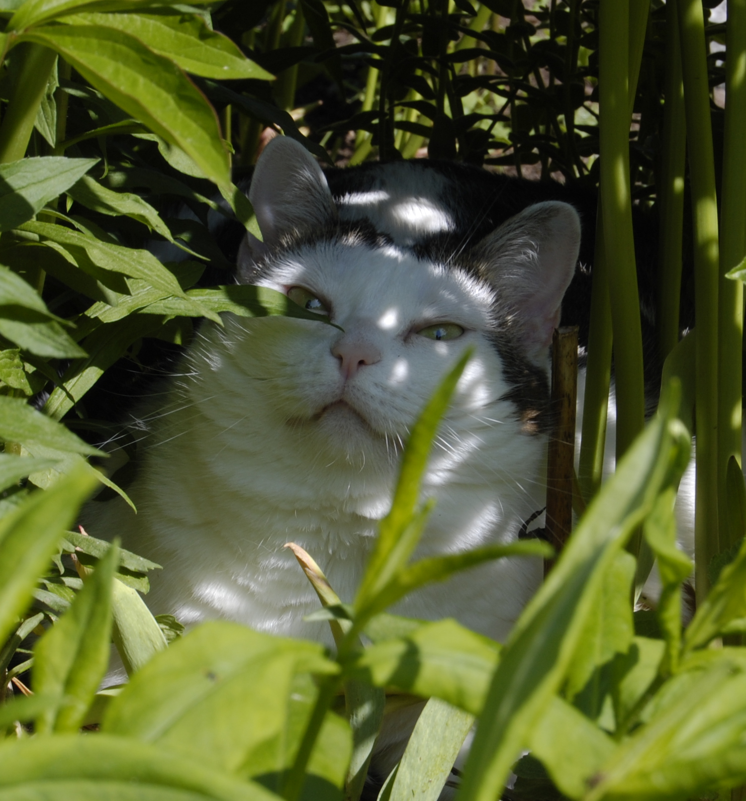

Julkishallinnon perusteet ja lainalaisuudet hallitseva yksilö.
Peruslähtökohdiltani olen umpisuora savolainen, joka on hurahtanut unix-pohjaisiin koneisiin sekä monenlaisiin kuva- ja äänihommiin.
Pidän elektronisesta musiikista, elokuvista ja monipuolisesta liikunnasta. ICT-alan puolella minua kiinnostaa erityisesti palvelimien ylläpitoon liittyvien tehtävien opettelu sekä pienimuotoinen pääasiassa omaan käyttöön tulevien scriptien valmistus ja ideointi. Tosin kiinnostukseni tekniikkaa ja erityisesti uutta teknologiaa kohtaan on aina ollut laaja-alaista. Suomen pitkät talvet luovatkin hyvät puitteet erilaiselle puuhastelulle ja uuden oppimiselle. Vaikka pidänkin tekniikasta, niin en ole koulutuksen kautta hankkinut valmiuksia alalle. Minulla on opiskelujeni kautta hankittu valmius toimia julkisen sektorin hallinnollisissa tehtävissä.Olen opiskellut Tampereen yliopistossa hallintotieteitä, jonka lisäksi olen suorittanut AV-viestinnän, tietojenkäsittelytieteen ja kansainvälisen kaupan opintoja eri ammattikorkeakouluissa Itä-Suomen alueella. Tampereella opintoni painottuivat julkisoikeuteen, jonka lisäksi laajana sivuaineena minulla oli julkinen talousjohtaminen.
Olen avoin, itseohjautuva sekä yhteistyö- ja vuorovaikutustaitoinen tiimipelaaja, joka kantaa vastuunsa kulloistenkin tehtävien asian- ja lainmukaisesta hoidosta. Tulokulmani haasteisiin ja sen mukanaan tuomiin ongelmiin on usein käytännönläheinen: ensin suunnitellaan ja sitten toteutetaan. Minun maailmankuvaani hallitsee tieto ja ajatus ihmisten yhdenvertaisuudesta. Henkilökohtainen menestysmittarini on onnellisuus.
Jo eletty elämä on opettanut minulle oma-aloitteisuutta ja vastuunkantoa sekä korostanut verkostoitumisen merkitystä työelämässä ja yhteiskunnassa. Henkilökohtaisista ominaisuuksistani nostan tässä yhteydessä esille: pitkäjännitteisyyden, päämäärätietoisuuden ja tarkkuuden. Pidän ongelmien ratkomisesta, visioimisesta ja niihin liittyvistä yksityiskohtien viilaamisesta. Minusta ihmisessä on monia puolia, jotka eivät suinkaan pois sulje toisiaan. Mielestäni laajempi näkökenttä voi olla myös vahvuus, koska se tukee itsenäisen ajattelun perusteita ja auttaa hahmottamaan ongelmia eri tulokulmista. Tällöin on kuitenkin huomioitava se, että haastaminen ei tarkoita aina oikeassa olemista.
Nykyinen yhteiskunnan ja työelämän teknologinen murros näyttää edellyttävän entistä tiiviimpää tehtäväkokonaisuuksien siiloutumista. Omalla kohdallani tärkein ja toimivin ns. kaiken toiminnan lähtökohta on aina ollut henkilökohtaisen motivaation sytyttäminen ja ylläpito. Olisi yleisesti syytä muistaa, että motivaatio ja kokemus eivät aina kulje parettain. Motivaation arvoa valmiuksia mittaavana punnuksena ei tulisi yleisesti aliarvioida.